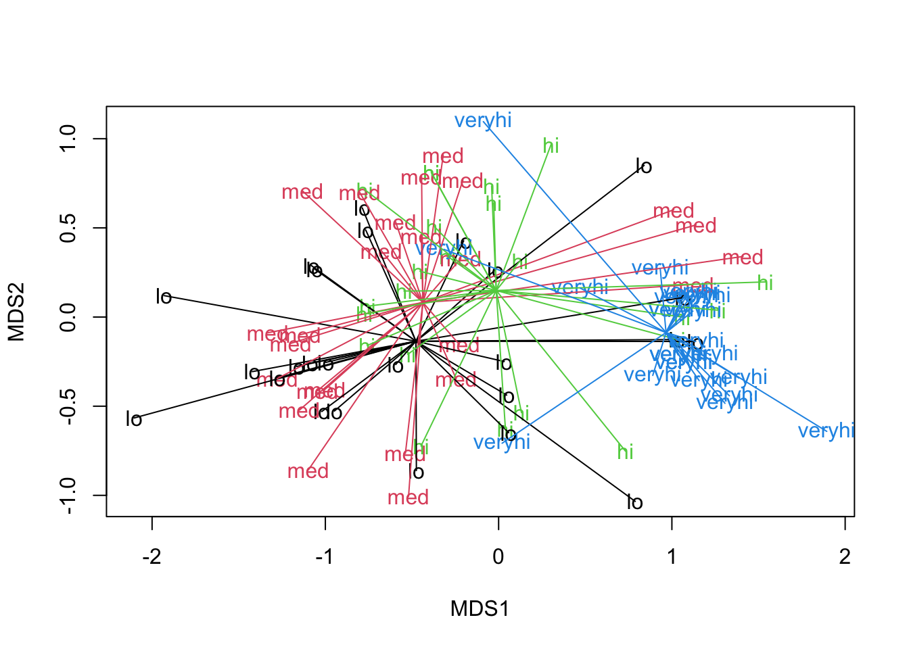
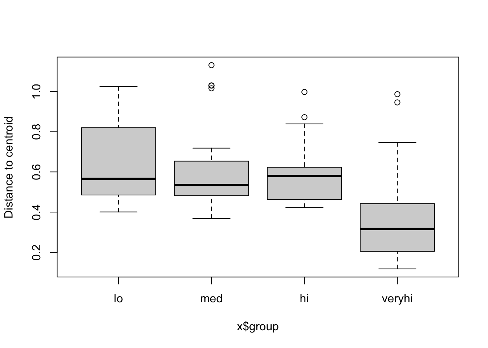

Chapter 11 Group differences
Do community compositions significantly differ among groups?
Let’s assume PERMANOVA is the best choice for comparing groups in multivariate space. Other methods (ANOSIM, MRPP) exist, but PERMANOVA usually has better power and false-detection rates, even when groups may have different dispersions (Anderson and Walsh 2013) among other operational advantages.
PERMANOVA (Permutational Multivariate Analysis of Variance) tests whether the composition of groups differs in multivariate space based on a dissimilarity matrix (e.g., Bray-Curtis). It is analogous to ANOVA for community data and uses permutations rather than normality assumptions to assess statistical significance.
## Recall in unconstrained ordination section
m1 <- metaMDS(D, k=2, maxit=250, try=100, trymax=101, trace=0) # NMDS
### define and visualize four groups
brk <- quantile(env$k, probs=seq(0,1,by=0.25)) # define breaks
grp_k <- cut(env$k, brk, include.lowest=T,
labels=c('lo','med','hi','veryhi')) # group memberships
table(grp_k, useNA='always') # group tally## grp_k
## lo med hi veryhi <NA>
## 25 25 23 24 0## lo med hi veryhi
## 0.584000 1.012000 1.582609 2.870833plot(m1$points, pch=NA) # visualize on the NMS
text(m1$points, labels=grp_k, col=as.numeric(grp_k)) # group memberships
ordispider(m1, groups=grp_k, col=1:4) # group centroids 
What do we see?
Grouping sites into quartiles of k shows that community composition varies along a k gradient in NMDS space. Low-k sites tend to occur toward the left side of the ordination, whereas very high-k sites are concentrated toward the right, suggesting that k is associated with the dominant compositional gradient. We can actually compare this to the NMDS plots created with environmental gradients in Section @ref{ord_unconstrained} and see this pattern as well.
11.1 Test for difference in community compositions
PERMANOVA tests for differences in multivariate centroids, in the space of the chosen dissimilarity measure. Recall that matrix D was our matrix of pairwise Bray-Curtis dissimilarities.
### permanova: test for differences in multivariate *centroid*
a1 <- adonis2(D ~ grp_k, permu=999)
a1## Permutation test for adonis under reduced model
## Permutation: free
## Number of permutations: 999
##
## adonis2(formula = D ~ grp_k, permutations = 999)
## Df SumOfSqs R2 F Pr(>F)
## Model 3 11.588 0.24801 10.224 0.001 ***
## Residual 93 35.136 0.75199
## Total 96 46.724 1.00000
## ---
## Signif. codes: 0 '***' 0.001 '**' 0.01 '*' 0.05 '.' 0.1 ' ' 1How do we interpret this result?
Based on Bray-Curtis dissimilarities, four groups defined by soil potassium significantly differed in community compositions (PERMANOVA pseudo-F = 10.2, permutational p = 0.001, R2 = 0.25). The NMDS ordination helps us see that this is largely driven by the “veryhi” group, which you can test formally by repeating PERMANOVA for pairwise multiple comparisons.
11.1.1 Test for homogeneity of community compositions
A related test, PERMDISP, tests for differences in multivariate dispersion, in the space of the chosen dissimilarity measure. This is interpreted as a test of among-group homogeneity of community compositions, i.e., beta-diversity. Conveniently, we can ask for pairwise multiple comparisons.
##
## Homogeneity of multivariate dispersions
##
## Call: betadisper(d = D, group = grp_k)
##
## No. of Positive Eigenvalues: 44
## No. of Negative Eigenvalues: 45
##
## Average distance to median:
## lo med hi veryhi
## 0.6455 0.6148 0.5923 0.3802
##
## Eigenvalues for PCoA axes:
## (Showing 8 of 89 eigenvalues)
## PCoA1 PCoA2 PCoA3 PCoA4 PCoA5 PCoA6 PCoA7 PCoA8
## 26.158 5.991 4.788 4.020 3.347 2.409 2.191 1.912##
## Permutation test for homogeneity of multivariate dispersions
## Permutation: free
## Number of permutations: 999
##
## Response: Distances
## Df Sum Sq Mean Sq F N.Perm Pr(>F)
## Groups 3 1.0573 0.35244 7.9873 999 0.001 ***
## Residuals 93 4.1036 0.04412
## ---
## Signif. codes: 0 '***' 0.001 '**' 0.01 '*' 0.05 '.' 0.1 ' ' 1
##
## Pairwise comparisons:
## (Observed p-value below diagonal, permuted p-value above diagonal)
## lo med hi veryhi
## lo 0.60500000 0.33100000 0.001
## med 0.61171967 0.67800000 0.001
## hi 0.33798371 0.68732930 0.003
## veryhi 0.00016087 0.00075595 0.00103463
How do we interpret this?
Based on Principal Coordinates reduction of original Bray-Curtis dissimilarities, the four groups defined by soil potassium significantly differed in homogeneity of community compositions (PERMDISP F = 7.98, permutational p = 0.001). This was due to the “veryhi” potassium group having significantly lower dispersion (lower beta-diversity) than the lower-potassium groups.
11.2 PERMANOVA equivalence to ANOVA
PERMANOVA works as ‘regular’ ANOVA when using Euclidean distances. We’d expect a different p-value since we’re using permutations, but identical F-values and sums-of-squares.
## Permutation test for adonis under reduced model
## Permutation: free
## Number of permutations: 999
##
## adonis2(formula = De ~ grp_k, permutations = 999)
## Df SumOfSqs R2 F Pr(>F)
## Model 3 72.186 0.76738 102.26 0.001 ***
## Residual 93 21.883 0.23262
## Total 96 94.069 1.00000
## ---
## Signif. codes: 0 '***' 0.001 '**' 0.01 '*' 0.05 '.' 0.1 ' ' 1## Analysis of Variance Table
##
## Response: k
## Df Sum Sq Mean Sq F value Pr(>F)
## grp_k 3 72.186 24.0621 102.26 < 2.2e-16 ***
## Residuals 93 21.883 0.2353
## ---
## Signif. codes: 0 '***' 0.001 '**' 0.01 '*' 0.05 '.' 0.1 ' ' 111.3 Key references
Anderson, M. J., and D. C. I. Walsh. 2013. PERMANOVA, ANOSIM, and the Mantel test in the face of heterogeneous dispersions: What null hypothesis are you testing? Ecological Monographs 83:557–574. https://doi.org/10.1890/12-2010.1